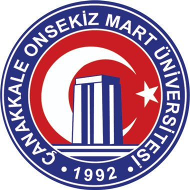

Çanakkale Onsekiz Mart Üniversitesi (ÇOMÜ), Türkiye'nin Çanakkale ilinde yer alan devlet üniversitesidir. SCIMAGO 2012 yıllık raporunda dünyanın en iyi 1500 üniversitesinden biri olarak listelenmiştir.[2] Üniversite, 2013 yılında Bilim Sanayi ve Teknoloji Bakanlığı tarafından Türkiye'nin En Girişimci Üniversiteleri Listesi'nde yer almıştır [3]. ÇOMÜ, Uluslararası Üniversiteler Birliği'nin, Avrupa Üniversiteler Birliği'nin, ADIM Üniversiteler Konsersiyumu[4]'nun ve Trakya Üniversiteler Birliği'nin üyesidir[5]. Üniversitenin logosunda, Türk Bayrağı üzerinde Çanakkale Şehitleri Anıtı bulunmaktadır.3 Temmuz 1992 tarihinde, 3837 sayılı kanunla kurulan Çanakkale Onsekiz Mart Üniversitesi 1992-93 Eğitim-Öğretim yılında Trakya Üniversitesi'nden devredilen Çanakkale Eğitim Fakültesi, Çanakkale Meslek Yüksekokulu ve Biga Meslek Yüksekokulu ile öğretime başlamıştır.
1993-94 Eğitim-Öğretim yılında Fen Edebiyat Fakültesi, Turizm İşletmeciliği ve Otelcilik Yüksekokulu ile Sağlık Hizmetleri Meslek Yüksekokulu, 1994-95 Eğitim-Öğretim yılında Biga İ.İ.B. Fakültesi, Ayvacık, Bayramiç Meslek Yüksekokulu), Çan, Ezine, Gelibolu ve Yenice Meslek Yüksekokulları ile Fen Bilimleri ve Sosyal Bilimler Enstitüsü, 1995-96 Eğitim-Öğretim yılında Ziraat, Su Ürünleri, İlahiyat ve Mühendislik-Mimarlık Fakülteleri, 1996-97 Eğitim-Öğretim yılında Sağlık Yüksekokulu, 1998-99 Eğitim Öğretim yılında Gökçeada Meslek Yüksekokulu 2000-01 Eğitim Öğretim yılında da Lapseki Meslek Yüksekokulu açılarak öğretime başlamışlardır.
Ayrıca 1997 yılında kurulan ve ilk öğrencilerini 2000-01 Eğitim-Öğretim yılında alan Güzel Sanatlar Fakültesi ve 7 Ağustos 2000 tarihli resmi gazetede yayınlanan Bakanlar Kurulu kararı ile kuruluşunun yasal sürecini tamamlayan Tıp Fakültesi, 2011 yılında Bakanlar Kurulu kararıyla açılan İletişim Fakültesi ve Biga Uygulamalı Bilimler Yüksekokulu, 2012'de açılan Mimarlık ve Tasarım Fakültesi, Çan Uygulamalı Bilimler Yüksekokulu ve Çanakkale merkezde açılan İktisadi ve İdari Bilimler Fakültesi ile 2013'te kurulan Çanakkale Deniz Bilimleri ve Teknolojisi Fakültesi ile 18 Fakülte, 13 Meslek Yüksekokulu, 4 Yüksekokul, 1 Enstitü ile beraber toplam 46 akademik birim ve 41 araştırma merkezine sahiptir.
Üniversitenin kısaltması ÇOMÜ'dür. 2021 yılı itibarıyla 1.936 akademik personeli ve 48.487 öğrencisi vardır.Ranking Web of World Universities sıralamasına göre dünyanın ilk 750 üniversitesinden biridir (2012). SCIMAGO'ya göre ise 1947. sırada yer almaktadır.[6] URAP 2012 listesinde ise 1331. sıradadır.[7]
Çanakkale Onsekiz Mart Üniversitesi (ÇOMÜ), 803 basamak birden yükselerek dünyanın ilk bin üniversitesi arasına girmeyi başardı. Listenin zirvesinde ABD üniversiteleri yer alıyor.
Üniversitelerin internet performansları üzerinden değerlendirildiği "4ICA Web Ranking" adlı dünya üniversiteler sıralaması 2013 yılında ÇOMÜ’yü dünyanın en iyi 959. üniversitesi olarak belirledi. Sıralamada 11. olan ÇOMÜ'yü 10 Türk üniversitesi geçmeyi başarırken Anadolu Üniversitesi 151., ODTÜ 289., Boğaziçi 385. oldu. “4 International Colleges&Universities” olarak da bilinen rayting kurumu, 200’den fazla ülkede 11 binden fazla üniversitenin internet üzerindeki performansına göre değerlendirmeler yapıyor.[8]
Türkiye'de ÖSYS sonuçlarına göre üniversitenin pek çok bölümü en üst ilk 20 arasında yer almaktadır. Bazı bölümleri ilk 3'te yer almıştır. (Japonca Öğretmenliği gibi). ÖSYS sonuçlarına göre ilk 1000 öğrenci arasından 21 tanesi ÇOMÜ'ye yerleşmiştir. 2013 yılında 85 lise birincisi ÇOMÜ'yü yerleşmiştir.
Sanayi ve Teknoloji Bakanlığı'nın değerlendirmelerine göre ÇOMÜ Türkiye'nin en girişimci ilk 50 üniversitesinden biridir.
Üniversite akademisyenlerinin her yıl bağımsız saygın ve indeksli dergilerde 300'ün üzerinde makalesi yayınlanmaktadır.2012-2013 eğitim öğretim yılı başlangıç öğrenci sayısı 37.500 idi. Bu öğrencilerin 3.400'den fazlası yüksek lisans (master) ve doktora öğrencisidir. Yaklaşık 10.000 öğrenci meslek yüksekokullarında eğitim görmektedir. ÇOMÜ öğrencilerinin 400 kadarı 44 farklı ülkeden gelen uluslararası öğrencilerdir. Üniversitenin bu öğrenciler için Türkçe öğretimi veren TÖMER birimi de mevcuttur.
Akademik personel sayısı 1.936'dır. Toplam personel sayısı ise 3.000'i bulmaktadır.
ÇOMÜ öğrenci sayısında son yıllarda radikal bir artış yaşanmıştır. 1992 yılında 2,378 öğrenci ile kurulan ÇOMÜ, 1993'te 75 öğrencilik artışla 2,475 öğrenciye ulaşmıştır. 1994-95 eğitim-öğretim yılında öğrenci sayısı 3,442'ye, 1995-96'da 5,564'e, 1996'da 6,492'ye, 1997'de 8,207'ye, 1998'de 9,368'e, 1999'da ise 10,359'a yükselmiştir.
2010-2011 eğitim öğretim yılında 11,405 öğrenciye ulaşan ÇOMÜ'de öğrenci sayısı 2001'de 12,440'a, 2002'de 13,902'ye çıkmıştır. 2006 yılında öğrenci sayısı 20 bin barajını aşarak 20,337'ye ulaşmıştır. 2007'de öğrenci sayısı 21,686'ya, 2008'de 23,366'ya, 2009'da 25,138'e, 2010'da 27 bine yükselmiştir. 2011 yılında öğrenci sayısı 4,088 artarak 31,107'e, 2012'de ise 6,607 artarak 37,500'e çıkmıştır.